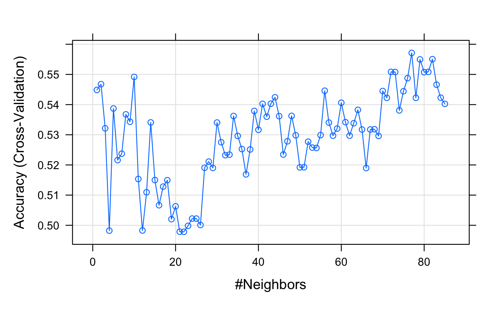
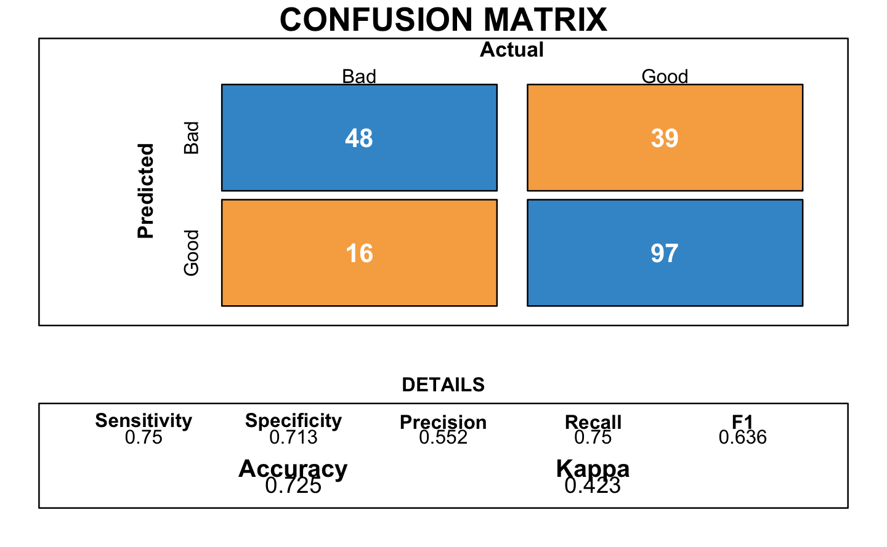

Chapter 3 Models
Now that our data set is cleaned, we move on to the creation of models to predict our outcome.
3.1 Splitting strategies and balancing
In machine learning, a method to measure the accuracy of the models is to split the data into a training and a test set. The first subset is a portion of our data set that is fed into the machine learning model to discover and learn patterns. The other subset is to test our model. We split our data set as follows:
- Training set: 80% of the data
- Test set: the remaining 20% of the data
# Splitting
set.seed(346)
# Creation of the index
index.tr <- createDataPartition(y = GermanCredit$RESPONSE, p= 0.8, list = FALSE)
GermanCredit.tr <- GermanCredit[index.tr,] # Training set
GermanCredit.te <- GermanCredit[-index.tr,] # Testing setAs said in the exploratory data analysis, we notice that our data is heavily unbalanced.
| Outcome | Frequence |
|---|---|
| 0 | 236 |
| 1 | 564 |
Therefore, any model that favors the majority will reach an higher accuracy. However, in our case, we need to make sure to rightly classify any credit applications to avoid losses. To do so, we use a method called sub-sampling that balance the observations.
# Balancing
n_no <- min(table(GermanCredit.tr$RESPONSE))
GermanCredit.tr.no <- filter(GermanCredit.tr, as_factor(RESPONSE)==0)
GermanCredit.tr.yes <- filter(GermanCredit.tr, as_factor(RESPONSE)==1)
## sub-sample 236 instances from the "Good"
index.no <- sample(size=n_no, x=1:nrow(GermanCredit.tr.no), replace=FALSE)
## Bind all the "Bad" and the sub-sampled "Good"
GermanCredit.tr.subs <- data.frame(rbind(GermanCredit.tr.no, GermanCredit.tr.yes[index.no,])) | Outcome | Frequence |
|---|---|
| 0 | 236 |
| 1 | 236 |
3.2 K-Nearest Neighbors (K-NN)
A K-Nearest Neighbors tries to predict the correct class for the test data by calculating the distances between the test data and all the training points. Then select a number, K, of the closest point of the test set (thus the name K-nearest neighbors).
trctrl <- trainControl(method = "cv", number=10)
search_grid <- expand.grid(k = seq(1, 85, by = 1))
set.seed(346)
knn_cv <- train(as_factor(RESPONSE)~.,
data = GermanCredit.tr.subs,
method = "knn",
trControl = trctrl,
metric = "Accuracy",
tuneGrid = search_grid)We need to select the K number of points closest that give the optimal accuracy

3.3 Naive Bayes
Bayes classifiers use a probabilistic approach
trctrl <- trainControl(method = "cv", number=10)
search_grid <- expand.grid(
usekernel = c(TRUE, FALSE),
laplace = 0:5,
adjust = seq(0, 5, by = 1)
)
set.seed(346)
naive_bayes <- train(as_factor(RESPONSE) ~.,
data = GermanCredit.tr.subs,
method = "naive_bayes",
trControl=trctrl,
tuneGrid = search_grid)
3.4 Logistic Regression
A logistic regression is a regression adapted to binary classification.
We use a cross-validation method to train our model and choose the Akaïke Information Criterion (AIC) to select the variables.
trctrl <- trainControl(method = "cv", number=10)
set.seed(346)
glm_aic <- train(as_factor(RESPONSE) ~.,
data = GermanCredit.tr.subs,
method = "glmStepAIC",
family="binomial",
trControl=trctrl,
trace=0)The resulting confusion matrix of the logistic regression:

3.5 Trees
The trees represent a hierarchical set of binary rules in a shape of a tree.


#> Obs
#> Pred 0 1
#> 0 42 48
#> 1 22 88
#> 0 1
#> 1 0.257 0.743
#> 2 0.683 0.317
#> 3 0.683 0.317
#> 4 0.343 0.657
#> 5 0.683 0.317
#> 6 0.683 0.317
#> 7 0.257 0.743
#> 8 0.257 0.743
#> 9 0.683 0.317
#> 10 0.683 0.317
#> 11 0.257 0.743
#> 12 0.257 0.743
#> 13 0.683 0.317
#> 14 0.683 0.317
#> 15 0.257 0.743
#> 16 0.683 0.317
#> 17 0.683 0.317
#> 18 0.683 0.317
#> 19 0.257 0.743
#> 20 0.343 0.657
#> 21 0.683 0.317
#> 22 0.683 0.317
#> 23 0.683 0.317
#> 24 0.257 0.743
#> 25 0.257 0.743
#> 26 0.257 0.743
#> 27 0.683 0.317
#> 28 0.257 0.743
#> 29 0.683 0.317
#> 30 0.683 0.317
#> 31 0.257 0.743
#> 32 0.257 0.743
#> 33 0.683 0.317
#> 34 0.257 0.743
#> 35 0.257 0.743
#> 36 0.343 0.657
#> 37 0.683 0.317
#> 38 0.257 0.743
#> 39 0.343 0.657
#> 40 0.257 0.743
#> 41 0.683 0.317
#> 42 0.683 0.317
#> 43 0.257 0.743
#> 44 0.683 0.317
#> 45 0.257 0.743
#> 46 0.257 0.743
#> 47 0.257 0.743
#> 48 0.343 0.657
#> 49 0.683 0.317
#> 50 0.257 0.743
#> 51 0.257 0.743
#> 52 0.683 0.317
#> 53 0.257 0.743
#> 54 0.257 0.743
#> 55 0.257 0.743
#> 56 0.257 0.743
#> 57 0.683 0.317
#> 58 0.683 0.317
#> 59 0.257 0.743
#> 60 0.257 0.743
#> 61 0.683 0.317
#> 62 0.257 0.743
#> 63 0.257 0.743
#> 64 0.257 0.743
#> 65 0.683 0.317
#> 66 0.683 0.317
#> 67 0.683 0.317
#> 68 0.683 0.317
#> 69 0.683 0.317
#> 70 0.683 0.317
#> 71 0.257 0.743
#> 72 0.257 0.743
#> 73 0.683 0.317
#> 74 0.683 0.317
#> 75 0.257 0.743
#> 76 0.343 0.657
#> 77 0.257 0.743
#> 78 0.683 0.317
#> 79 0.257 0.743
#> 80 0.683 0.317
#> 81 0.257 0.743
#> 82 0.257 0.743
#> 83 0.683 0.317
#> 84 0.683 0.317
#> 85 0.683 0.317
#> 86 0.683 0.317
#> 87 0.343 0.657
#> 88 0.683 0.317
#> 89 0.257 0.743
#> 90 0.683 0.317
#> 91 0.257 0.743
#> 92 0.257 0.743
#> 93 0.257 0.743
#> 94 0.257 0.743
#> 95 0.683 0.317
#> 96 0.257 0.743
#> 97 0.683 0.317
#> 98 0.257 0.743
#> 99 0.343 0.657
#> 100 0.257 0.743
#> 101 0.257 0.743
#> 102 0.343 0.657
#> 103 0.257 0.743
#> 104 0.343 0.657
#> 105 0.257 0.743
#> 106 0.683 0.317
#> 107 0.257 0.743
#> 108 0.343 0.657
#> 109 0.683 0.317
#> 110 0.257 0.743
#> 111 0.683 0.317
#> 112 0.257 0.743
#> 113 0.343 0.657
#> 114 0.683 0.317
#> 115 0.257 0.743
#> 116 0.683 0.317
#> 117 0.683 0.317
#> 118 0.257 0.743
#> 119 0.343 0.657
#> 120 0.683 0.317
#> 121 0.683 0.317
#> 122 0.683 0.317
#> 123 0.343 0.657
#> 124 0.343 0.657
#> 125 0.257 0.743
#> 126 0.683 0.317
#> 127 0.683 0.317
#> 128 0.683 0.317
#> 129 0.343 0.657
#> 130 0.257 0.743
#> 131 0.257 0.743
#> 132 0.257 0.743
#> 133 0.257 0.743
#> 134 0.683 0.317
#> 135 0.683 0.317
#> 136 0.257 0.743
#> 137 0.257 0.743
#> 138 0.257 0.743
#> 139 0.683 0.317
#> 140 0.257 0.743
#> 141 0.257 0.743
#> 142 0.257 0.743
#> 143 0.257 0.743
#> 144 0.257 0.743
#> 145 0.257 0.743
#> 146 0.683 0.317
#> 147 0.683 0.317
#> 148 0.683 0.317
#> 149 0.257 0.743
#> 150 0.683 0.317
#> 151 0.257 0.743
#> 152 0.683 0.317
#> 153 0.257 0.743
#> 154 0.257 0.743
#> 155 0.683 0.317
#> 156 0.683 0.317
#> 157 0.683 0.317
#> 158 0.343 0.657
#> 159 0.683 0.317
#> 160 0.683 0.317
#> 161 0.683 0.317
#> 162 0.683 0.317
#> 163 0.683 0.317
#> 164 0.257 0.743
#> 165 0.683 0.317
#> 166 0.257 0.743
#> 167 0.257 0.743
#> 168 0.683 0.317
#> 169 0.257 0.743
#> 170 0.683 0.317
#> 171 0.683 0.317
#> 172 0.257 0.743
#> 173 0.343 0.657
#> 174 0.257 0.743
#> 175 0.257 0.743
#> 176 0.683 0.317
#> 177 0.257 0.743
#> 178 0.257 0.743
#> 179 0.257 0.743
#> 180 0.683 0.317
#> 181 0.683 0.317
#> 182 0.683 0.317
#> 183 0.683 0.317
#> 184 0.343 0.657
#> 185 0.343 0.657
#> 186 0.683 0.317
#> 187 0.257 0.743
#> 188 0.257 0.743
#> 189 0.683 0.317
#> 190 0.683 0.317
#> 191 0.683 0.317
#> 192 0.257 0.743
#> 193 0.683 0.317
#> 194 0.257 0.743
#> 195 0.257 0.743
#> 196 0.257 0.743
#> 197 0.683 0.317
#> 198 0.683 0.317
#> 199 0.257 0.743
#> 200 0.683 0.3173.7 Trees


#> Obs
#> Pred 0 1
#> 0 42 48
#> 1 22 88
#> 0 1
#> 1 0.257 0.743
#> 2 0.683 0.317
#> 3 0.683 0.317
#> 4 0.343 0.657
#> 5 0.683 0.317
#> 6 0.683 0.317
#> 7 0.257 0.743
#> 8 0.257 0.743
#> 9 0.683 0.317
#> 10 0.683 0.317
#> 11 0.257 0.743
#> 12 0.257 0.743
#> 13 0.683 0.317
#> 14 0.683 0.317
#> 15 0.257 0.743
#> 16 0.683 0.317
#> 17 0.683 0.317
#> 18 0.683 0.317
#> 19 0.257 0.743
#> 20 0.343 0.657
#> 21 0.683 0.317
#> 22 0.683 0.317
#> 23 0.683 0.317
#> 24 0.257 0.743
#> 25 0.257 0.743
#> 26 0.257 0.743
#> 27 0.683 0.317
#> 28 0.257 0.743
#> 29 0.683 0.317
#> 30 0.683 0.317
#> 31 0.257 0.743
#> 32 0.257 0.743
#> 33 0.683 0.317
#> 34 0.257 0.743
#> 35 0.257 0.743
#> 36 0.343 0.657
#> 37 0.683 0.317
#> 38 0.257 0.743
#> 39 0.343 0.657
#> 40 0.257 0.743
#> 41 0.683 0.317
#> 42 0.683 0.317
#> 43 0.257 0.743
#> 44 0.683 0.317
#> 45 0.257 0.743
#> 46 0.257 0.743
#> 47 0.257 0.743
#> 48 0.343 0.657
#> 49 0.683 0.317
#> 50 0.257 0.743
#> 51 0.257 0.743
#> 52 0.683 0.317
#> 53 0.257 0.743
#> 54 0.257 0.743
#> 55 0.257 0.743
#> 56 0.257 0.743
#> 57 0.683 0.317
#> 58 0.683 0.317
#> 59 0.257 0.743
#> 60 0.257 0.743
#> 61 0.683 0.317
#> 62 0.257 0.743
#> 63 0.257 0.743
#> 64 0.257 0.743
#> 65 0.683 0.317
#> 66 0.683 0.317
#> 67 0.683 0.317
#> 68 0.683 0.317
#> 69 0.683 0.317
#> 70 0.683 0.317
#> 71 0.257 0.743
#> 72 0.257 0.743
#> 73 0.683 0.317
#> 74 0.683 0.317
#> 75 0.257 0.743
#> 76 0.343 0.657
#> 77 0.257 0.743
#> 78 0.683 0.317
#> 79 0.257 0.743
#> 80 0.683 0.317
#> 81 0.257 0.743
#> 82 0.257 0.743
#> 83 0.683 0.317
#> 84 0.683 0.317
#> 85 0.683 0.317
#> 86 0.683 0.317
#> 87 0.343 0.657
#> 88 0.683 0.317
#> 89 0.257 0.743
#> 90 0.683 0.317
#> 91 0.257 0.743
#> 92 0.257 0.743
#> 93 0.257 0.743
#> 94 0.257 0.743
#> 95 0.683 0.317
#> 96 0.257 0.743
#> 97 0.683 0.317
#> 98 0.257 0.743
#> 99 0.343 0.657
#> 100 0.257 0.743
#> 101 0.257 0.743
#> 102 0.343 0.657
#> 103 0.257 0.743
#> 104 0.343 0.657
#> 105 0.257 0.743
#> 106 0.683 0.317
#> 107 0.257 0.743
#> 108 0.343 0.657
#> 109 0.683 0.317
#> 110 0.257 0.743
#> 111 0.683 0.317
#> 112 0.257 0.743
#> 113 0.343 0.657
#> 114 0.683 0.317
#> 115 0.257 0.743
#> 116 0.683 0.317
#> 117 0.683 0.317
#> 118 0.257 0.743
#> 119 0.343 0.657
#> 120 0.683 0.317
#> 121 0.683 0.317
#> 122 0.683 0.317
#> 123 0.343 0.657
#> 124 0.343 0.657
#> 125 0.257 0.743
#> 126 0.683 0.317
#> 127 0.683 0.317
#> 128 0.683 0.317
#> 129 0.343 0.657
#> 130 0.257 0.743
#> 131 0.257 0.743
#> 132 0.257 0.743
#> 133 0.257 0.743
#> 134 0.683 0.317
#> 135 0.683 0.317
#> 136 0.257 0.743
#> 137 0.257 0.743
#> 138 0.257 0.743
#> 139 0.683 0.317
#> 140 0.257 0.743
#> 141 0.257 0.743
#> 142 0.257 0.743
#> 143 0.257 0.743
#> 144 0.257 0.743
#> 145 0.257 0.743
#> 146 0.683 0.317
#> 147 0.683 0.317
#> 148 0.683 0.317
#> 149 0.257 0.743
#> 150 0.683 0.317
#> 151 0.257 0.743
#> 152 0.683 0.317
#> 153 0.257 0.743
#> 154 0.257 0.743
#> 155 0.683 0.317
#> 156 0.683 0.317
#> 157 0.683 0.317
#> 158 0.343 0.657
#> 159 0.683 0.317
#> 160 0.683 0.317
#> 161 0.683 0.317
#> 162 0.683 0.317
#> 163 0.683 0.317
#> 164 0.257 0.743
#> 165 0.683 0.317
#> 166 0.257 0.743
#> 167 0.257 0.743
#> 168 0.683 0.317
#> 169 0.257 0.743
#> 170 0.683 0.317
#> 171 0.683 0.317
#> 172 0.257 0.743
#> 173 0.343 0.657
#> 174 0.257 0.743
#> 175 0.257 0.743
#> 176 0.683 0.317
#> 177 0.257 0.743
#> 178 0.257 0.743
#> 179 0.257 0.743
#> 180 0.683 0.317
#> 181 0.683 0.317
#> 182 0.683 0.317
#> 183 0.683 0.317
#> 184 0.343 0.657
#> 185 0.343 0.657
#> 186 0.683 0.317
#> 187 0.257 0.743
#> 188 0.257 0.743
#> 189 0.683 0.317
#> 190 0.683 0.317
#> 191 0.683 0.317
#> 192 0.257 0.743
#> 193 0.683 0.317
#> 194 0.257 0.743
#> 195 0.257 0.743
#> 196 0.257 0.743
#> 197 0.683 0.317
#> 198 0.683 0.317
#> 199 0.257 0.743
#> 200 0.683 0.317